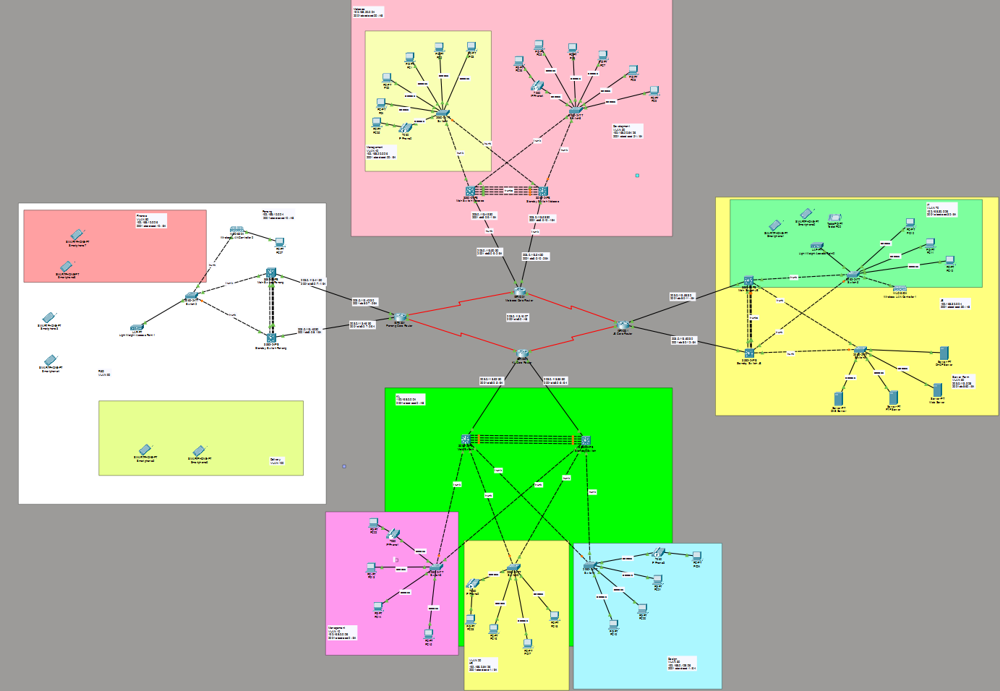

A four-site corporate network designed and configured end to end in Cisco Packet Tracer — VLAN-segmented departments, a VLSM addressing plan, OSPF routing, redundant gateways and aggregated links, controller-managed wireless, and Layer 2 attack mitigation.
The brief was a network upgrade for a company operating across four sites — a headquarters in Kuala Lumpur plus branches in Malacca, Johor Bahru and Penang — each housing different departments with different needs. The task was to design the logical topology from scratch and configure every device in Cisco Packet Tracer as a working prototype.
The sites are not uniform, which is what makes the design interesting. The headquarters and Malacca remain fully wired. Penang moves to controller-managed wireless so its access points can be configured centrally rather than one by one. Johor Bahru runs a mix of both and also hosts the server farm. Each department — management, human resources, design, finance, research and development, delivery, IT — becomes its own VLAN, so traffic is separated by function rather than by whichever switch someone happens to be plugged into.
Because this is a prototype rather than a diagram, every requirement had to actually work in simulation: addressing had to be consistent across sites, routing had to converge, failover had to survive a link going down, and connectivity had to be provable with ping and traceroute end to end.
Headquarters and three branches joined over WAN links to a routed core, with distribution and access layers built out per site.
Every department is its own broadcast domain, keeping traffic separated by business function and limiting the blast radius of a Layer 2 problem.
Subnets sized to each department rather than issued uniformly, with public addressing on the WAN links and server farm and private ranges inside each site.
Dynamic routing between sites so the network converges on its own, with a default static route handling traffic leaving the topology.
Redundant default gateways so a failed router does not isolate a VLAN, and bundled physical links that add bandwidth while surviving the loss of a member.
A WLC serving wireless VLANs with DHCP and WPA2 authentication, so access points are managed centrally instead of individually.
Port security and related mitigations applied against common Layer 2 attacks, alongside baseline hardening on every router and switch.
DNS, FTP and web services hosted in the Johor Bahru server farm, with DHCPv4 serving addresses across multiple LANs.

Built with a project team, with the technical areas divided between members. The topology itself was mine, along with the addressing plan the rest of the build depended on.